Gambar layar memakai data contoh; nama sekolah, guru, dan isi laporan di aplikasi Anda akan berbeda.
Bagian 1Mengenal aplikasi CERMAT
CERMAT terdiri dari dua bagian dalam satu aplikasi. Pustaka Digital CERMAT berisi folder materi program (Silabus, Modul, Bahan Tayang, Lembar Kerja). Laporan CERMAT dipakai untuk menyusun, mengesahkan, dan mengunduh laporan 22 pendampingan. Satu akun dipakai untuk keduanya.
AlamatAlamat aplikasi: https://pusatbelajargurukudus.github.io/cermat/
Bisa dibuka di HP maupun laptop. Akun (username dan password awal) diberikan oleh admin program.
Bisa dibuka di HP maupun laptop. Akun (username dan password awal) diberikan oleh admin program.
Bagian 2Memasang aplikasi di HP dan laptop
Setelah dipasang, CERMAT muncul sebagai ikon di layar utama dan terbuka seperti aplikasi biasa, tanpa perlu mengetik alamat. Memasang tidak lewat Play Store atau App Store dan tidak memakan banyak memori.
HP Android (Google Chrome)
- 1Buka Chrome, ketik alamat pusatbelajargurukudus.github.io/cermat, lalu tunggu halaman terbuka.
- 2Ketuk tombol menu ⋮ (titik tiga) di kanan atas.
- 3Pilih Instal aplikasi. Bila tidak ada, pilih Tambahkan ke layar utama, lalu pilih Instal.
- 4Ketuk Instal. Ikon CERMAT muncul di layar utama. Selanjutnya buka CERMAT dari ikon itu.
1–2. Ketuk ⋮, pilih Instal aplikasi
(atau Tambahkan ke layar utama)
(atau Tambahkan ke layar utama)
BatalInstal
3. Ketuk Instal
4. Buka dari ikon CERMAT
iPhone dan iPad (Safari)
- 1Buka Safari (bukan Chrome), ketik alamat pusatbelajargurukudus.github.io/cermat.
- 2Ketuk tombol Bagikan (kotak dengan panah ke atas) di bilah bawah. Pada iOS versi terbaru, tombol ini ada di menu ••• di sebelah kolom alamat.
- 3Gulir daftar pilihan, lalu ketuk Tambahkan ke Layar Utama.
- 4Ketuk Tambah di kanan atas. Ikon CERMAT muncul di layar utama.
1–2. Buka di Safari, ketuk Bagikan
Salin
Tambahkan ke Daftar Bacaan
Tambahkan Markah
Tambahkan ke Layar Utama ⊞
Cetak
3. Pilih Tambahkan ke Layar Utama
pusatbelajargurukudus.github.io/cermat
4. Ketuk Tambah (kanan atas)
Laptop atau komputer (Chrome / Microsoft Edge)
- 1Buka alamat pusatbelajargurukudus.github.io/cermat di Chrome atau Edge.
- 2Klik ikon instal (gambar layar dengan panah ke bawah) di ujung kanan kolom alamat, lalu klik Instal.
- 3CERMAT terbuka di jendela sendiri dan muncul di menu Start / Launchpad. Tanpa dipasang pun, CERMAT tetap bisa dipakai lewat browser biasa.
TipsBila ikon instal tidak muncul, buka sekali lagi alamat di atas, tunggu beberapa detik, lalu ulangi. Di iPhone, pemasangan hanya bisa lewat Safari.
Bagian 3Masuk (login)
- 1Buka aplikasi CERMAT. Halaman Masuk tampil di bawah kepala halaman biru.
- 2Ketik username dan password dari admin. Ketuk ikon mata untuk melihat password yang Anda ketik, supaya tidak salah huruf.
- 3Ketuk Masuk. Nama Anda tampil di kanan atas (di HP: di bawah judul). Folder yang tampil untuk Anda: yang sudah dipilih admin untuk guru.
Login cukup sekali. Selama belum menekan Keluar, aplikasi tetap masuk walau ditutup. Lupa password? Hubungi admin program.
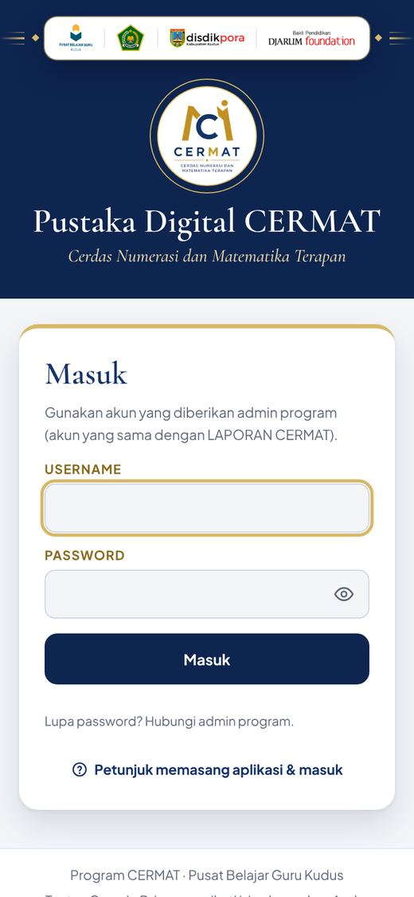

Bagian 4Akun Saya: profil, ganti password, keluar
- 1Ketuk nama akun di bagian atas (contoh: Guru SD Negeri Contoh 1).
- 2Jendela Akun Saya terbuka, berisi nama akun dan keterangannya.
- 3Untuk keluar dari akun, ketuk Keluar.
PentingAkun guru dipakai bersama oleh semua guru di satu sekolah. Karena itu password akun guru tidak bisa diganti sendiri; hanya admin yang bisa menggantinya. Jangan bagikan password ke luar sekolah.
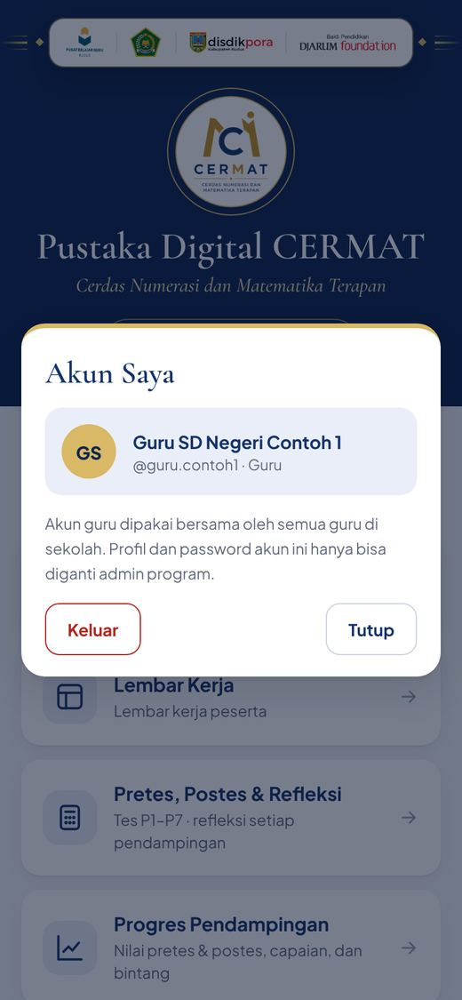
Bagian 5Membuka materi
- 1Setelah masuk, tampil folder materi yang disediakan untuk guru, misalnya Modul dan Lembar Kerja.
- 2Ketuk kartu folder. Isi folder tampil di dalam CERMAT, dikelompokkan per pendampingan.
- 3Materi pendampingan yang belum ditampilkan fasilitator bertanda Terkunci. Materi terbuka saat pendampingan (biasanya bersamaan dengan pretes).
Akun guru hanya untuk membuka materi. Laporan pendampingan dikerjakan fasilitator dan kepala sekolah.
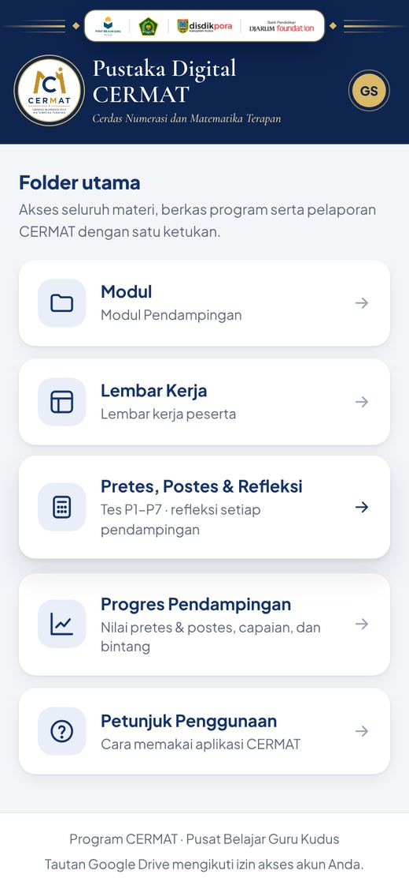
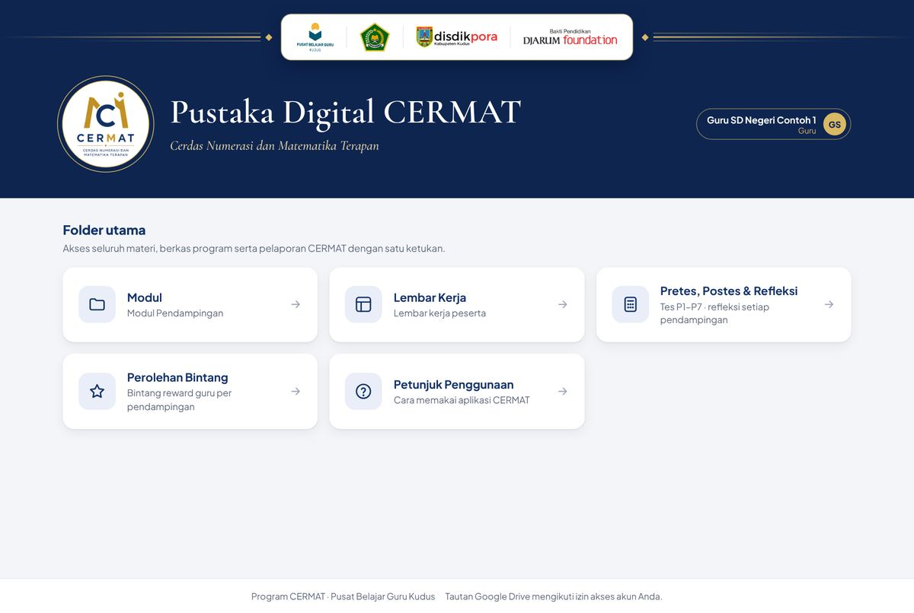
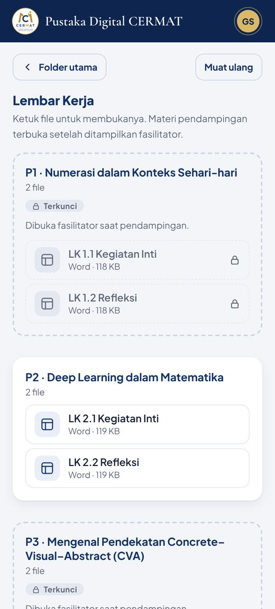
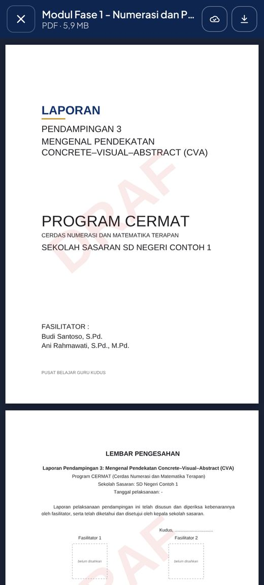
- 4Ketuk file untuk membukanya. File tampil langsung di layar CERMAT, tanpa membuka Google Drive.
- 5Tombol Unduh di kanan atas menyimpan file (Word, PowerPoint, atau PDF) ke HP/laptop, misalnya untuk dicetak.
- 6Modul PDF punya tombol Simpan offline: file disimpan di perangkat dan bisa dibaca tanpa internet. Daftar file menandainya dengan Tersimpan. Ketuk tombol yang sama untuk menghapusnya.
- 7Ketuk tanda × di kiri atas (atau tombol Kembali di HP) untuk menutup file.
Bagian 6Mengerjakan pretes, postes & refleksi
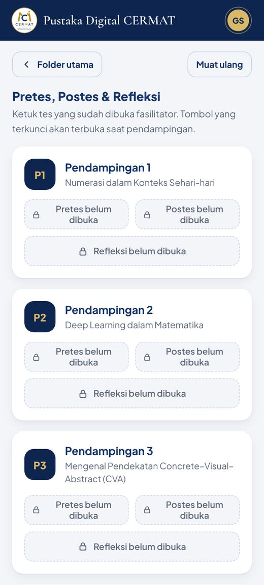

- 1Di halaman utama, ketuk kartu Pretes, Postes & Refleksi. Tampil kartu setiap pendampingan.
- 2Tombol tes terkunci (belum dibuka) sampai fasilitator mengaktifkannya saat pendampingan. Halaman memeriksa sendiri setiap 30 detik; bisa juga ketuk Muat ulang.
- 3Setelah dibuka, ketuk Kerjakan Pretes atau Kerjakan Postes.
- 4Muncul Pilih nama Anda berisi daftar guru sekolah Anda. Ketik sebagian nama di kotak Cari nama bila daftarnya panjang.
- 5Ketuk nama Anda, lalu ketuk Lanjut ke Pretes sebagai …. Periksa namanya sebelum melanjutkan.
- 6Google Form terbuka dengan nama, jabatan/kelas, jenis tes, dan asal sekolah sudah terisi. Jawab soal, lalu kirim.
- 7Pretes, postes, dan refleksi hanya sekali. Nama yang sudah mengirim tampil redup bertanda Sudah mengerjakan dan tidak bisa dipilih. Bila tetap mengirim ulang lewat cara lain, yang dihitung kiriman pertama.
- 8Nama Anda tidak ada? Ketuk Nama saya tidak ada di daftar, lalu tulis nama lengkap Anda sendiri di form.
Akun guru dipakai bersama. Setiap guru memilih namanya sendiri sebelum mengerjakan, supaya nilainya tercatat atas nama yang benar. Nama yang terakhir dipilih di HP itu ditaruh paling atas, tetapi tetap harus diketuk.
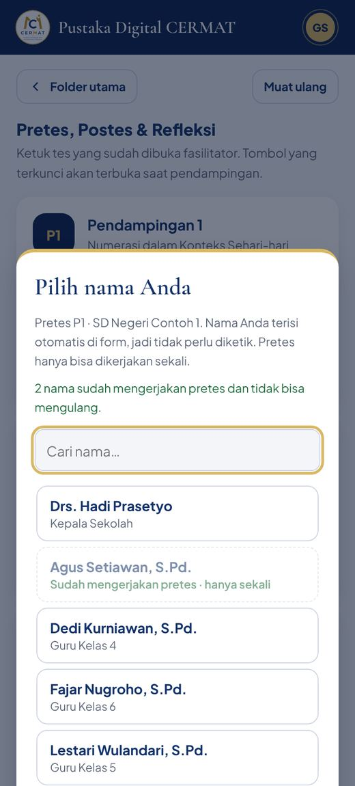
Refleksi
- 8Refleksi terbuka bersamaan dengan postes. Tombolnya Isi Refleksi di kartu pendampingan.
- 9Setelah mengerjakan postes dan kembali ke CERMAT, muncul Postes selesai?. Ketuk Isi refleksi sekarang: form refleksi terbuka dengan nama yang tadi dipilih.
- 10Ketuk Nanti bila belum sempat. Refleksi tetap bisa diisi lewat tombol Isi Refleksi sampai ditutup fasilitator atau pukul 23.59.
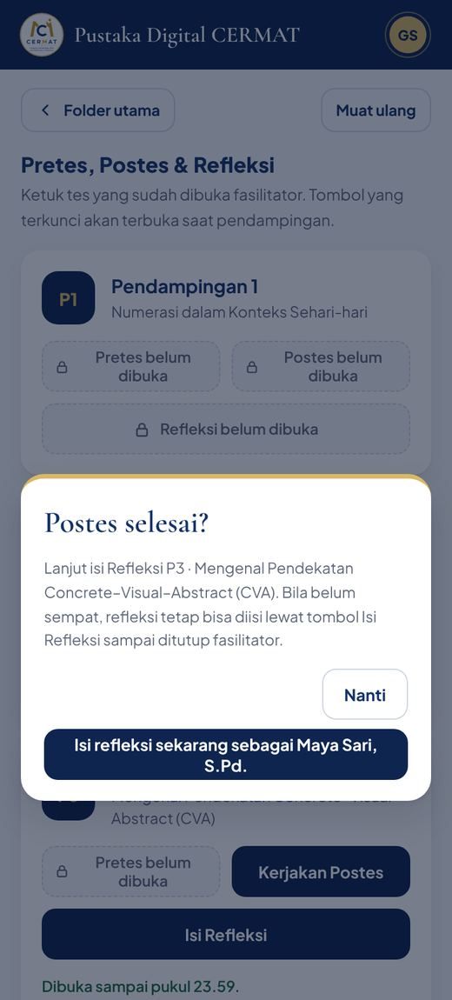

Bagian 7Progres Pendampingan
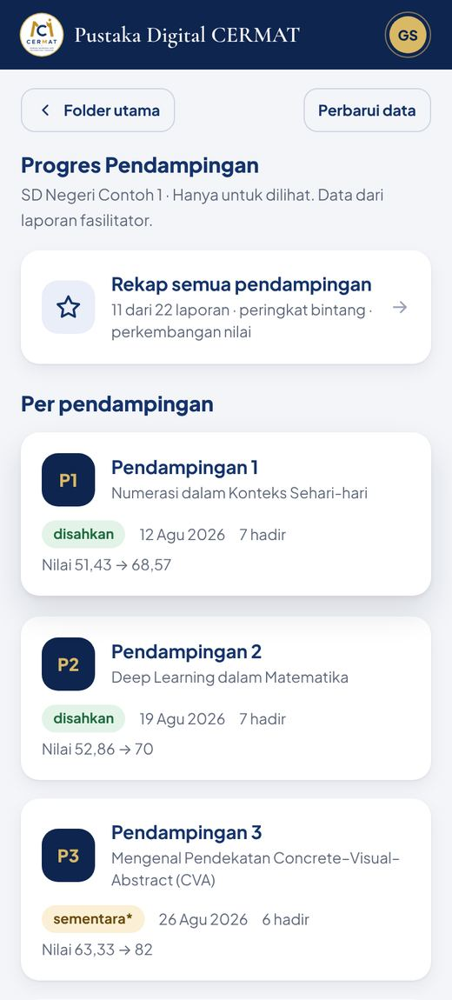
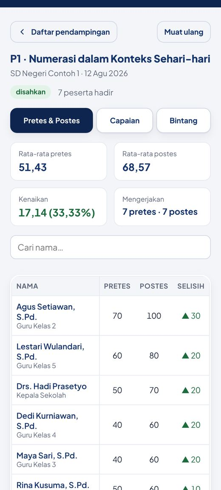
- 1Di halaman utama, ketuk kartu Progres Pendampingan. Sekolah Anda langsung tampil.
- 2Tampil kartu Rekap semua pendampingan dan daftar P1–P22. Setiap pendampingan bertanda disahkan, sementara* (laporan belum disahkan, angka masih bisa berubah), atau belum ada laporan.
- 3Ketuk satu pendampingan, lalu pilih tombol Pretes & Postes, Capaian, atau Bintang. Pendampingan tanpa tes (P8–P22) hanya punya Capaian dan Bintang.
Kartu ini hanya untuk dilihat, di semua akun. Nilai, capaian, dan bintang diisi fasilitator di laporan pendampingan, lalu tampil di sini untuk bahan evaluasi bersama.
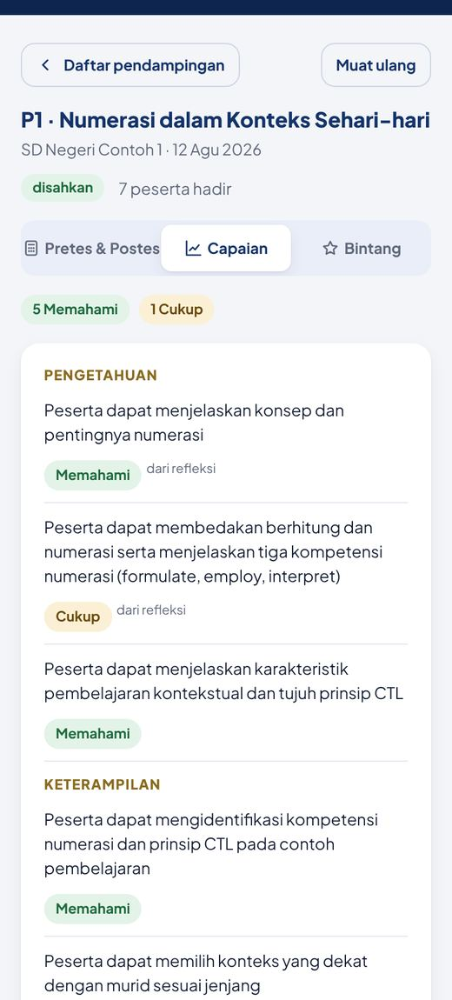
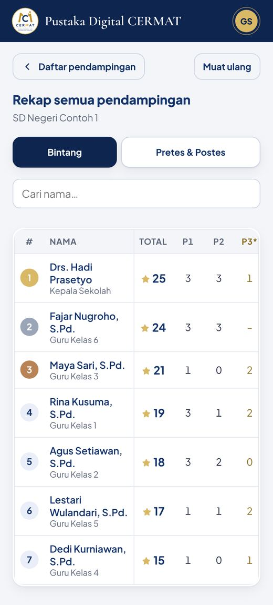
- 4Pretes & Postes: rata-rata pretes dan postes, kenaikannya, lalu nilai setiap peserta beserta selisihnya (▲ naik, ▼ turun). Tanda – berarti tidak mengerjakan.
- 5Capaian: setiap indikator dengan statusnya (Sangat memahami, Memahami, Cukup, Kurang, Belum memahami). Label dari refleksi berarti status dihitung dari jawaban refleksi peserta.
- 6Bintang: bintang setiap peserta yang hadir di pendampingan itu.
- 7Rekap semua pendampingan: tombol Bintang berisi peringkat total bintang (nilai sama = peringkat sama, nomor tidak melompat; – = tidak hadir), tombol Pretes & Postes berisi grafik rata-rata P1–P7.
- 8Ketik sebagian nama di kotak Cari nama. Nilai dan refleksi masuk otomatis dari Google Form; ketuk Perbarui data untuk mengambil yang terbaru sekarang.

BantuanBila ada kendala
| Lupa password | Hubungi admin program. Admin akan memberi password baru; setelah masuk, segera ganti lewat Akun Saya. |
|---|---|
| Tampilan belum berubah setelah ada pembaruan | Tutup aplikasi sepenuhnya, lalu buka lagi. Bila belum berubah, ulangi sekali lagi. |
| Folder tidak bisa dibuka / diminta izin | Folder Google Drive mengikuti izin akses. Pastikan Anda memakai akun Google yang sudah diberi akses, atau hubungi admin. |